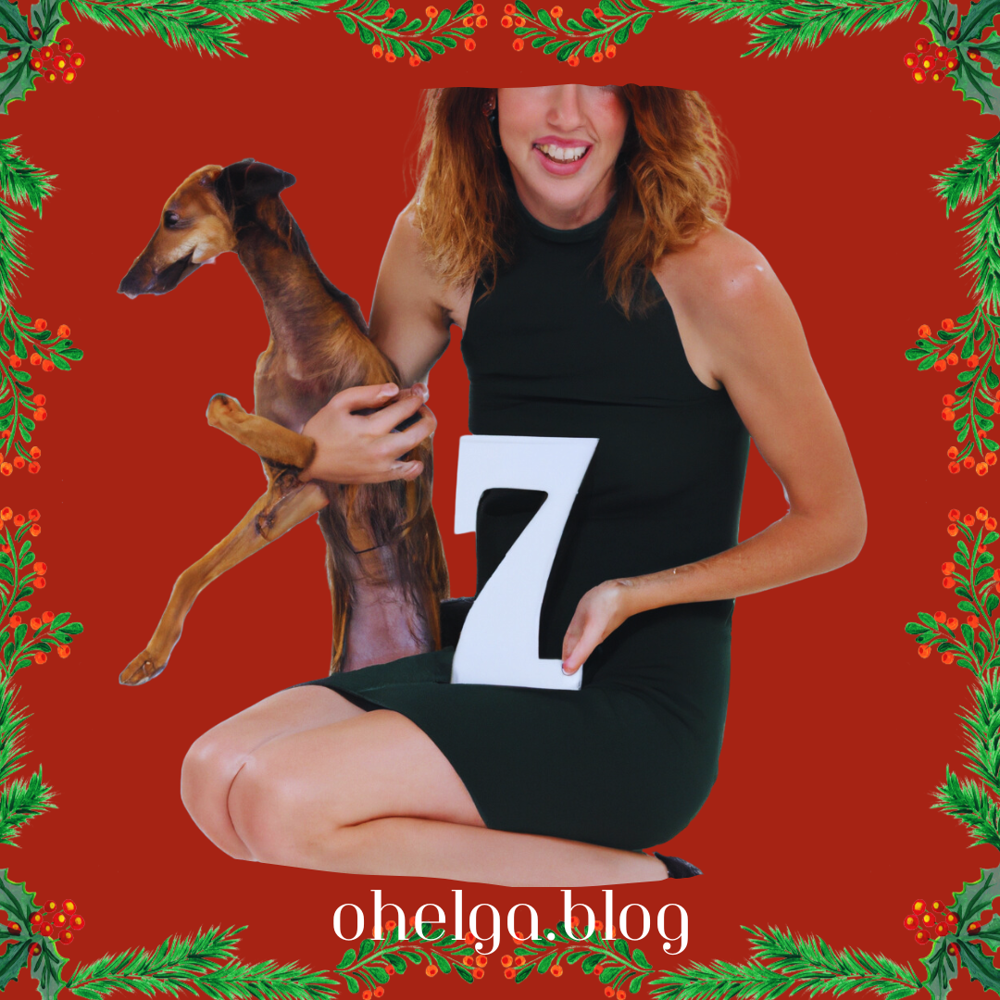

I dagens lucka finns en version med “spekulativ urringning”. Kuinka paljon Tomi tietää ruotsalaisesta euroviisukulttuurista ja populaarikulttuuri-juoruista? Hur många poäng får denna version med retrovibbar? Päivän luukussa: Charlotte Perelli (Mats Rondin): Cantique de Noël (O Holy Night).
I dagens lucka finns en version med “spekulativ urringning”. Kuinka paljon Tomi tietää ruotsalaisesta euroviisukulttuurista ja populaarikulttuuri-juoruista? Hur många poäng får denna version med retrovibbar? Päivän luukussa: Charlotte Perelli (Mats Rondin): Cantique de Noël (O Holy Night).
Kommentit / Kommentarer (4)
<p>Hon sjunger över förväntan bra. Jag har trott att hon mest är verksam i dansbandsmusik.Nåja varför skulle inte en dansbandsvokalist kunna sjunga klockrent och ha vacker röst. </p>
<p>Kvinnan som vunnit Eurovision med den näst sämsta låten någonsin, bara Lettlands vinnarlåt var värre. Det kanske färgar mitt omdöme nu. Det var ju en kompetent produktion, men den gjorde inte så mycket för mig. Hon sjöng bra, men inte fantastiskt. Nu blir det ju lite knasigt om jag även ger denna en sjua, för som produktion var detta nog proffsigare än den samiska versionen i går, men eftersom den lämnade mig så kallsinnig får det ändå bli så. Jag har liksom inget behov av att höra detta igen.</p>
<p>Ja, men visst är det ett märkligt år när typ alla versioner landar på åtta eller sju? Jag tycker ändå att hon sjunger ganska vackert, men så har jag sett en youtubeversion också, som var fin och den kanske påverkar mig (mer än ESC i alla fall). </p>
<p>Jag kopplar ärligt talat mest ihop henne med löpsedlar, inte så mycket med musik - har inte riktigt koll på vad hon sjunger i för genre. Men visst, som du säger, nog kan ju dansbandsmusiker också sjunga (ibland)!</p>